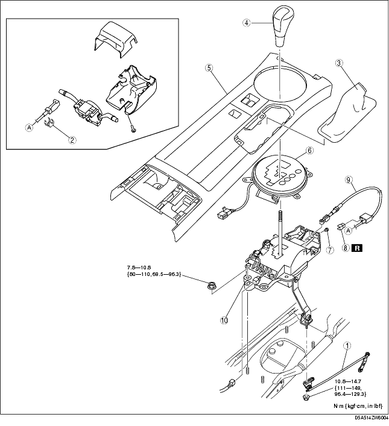
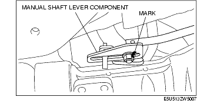
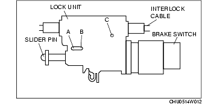
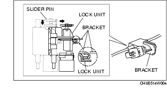
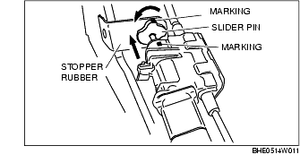
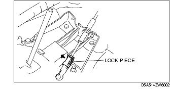
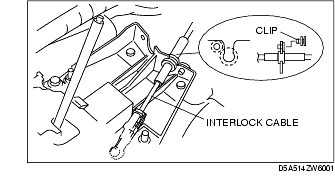
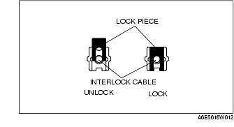
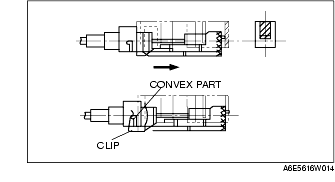

Workshop Manual ➭ TRANSMISSION/TRANSAXLE ➭ AUTOMATIC TRANSMISSION SHIFT MECHANISM ➭ SELECTOR LEVER REMOVAL/INSTALLATION
SELECTOR LEVER REMOVAL/INSTALLATION
id051400255700
{: #wp1059778}
-
Remove the battery cover.
-
Disconnect the negative battery cable. (See BATTERY REMOVAL/INSTALLATION [L8, LF].)
-
Remove the following parts.
(1) Side wall (See SIDE WALL REMOVAL/INSTALLATION.) {: #wp1059816}(2) Column cover (See COLUMN COVER REMOVAL/INSTALLATION.) {: #wp1059834}(3) Driver-side air bag module (See DRIVER-SIDE AIR BAG MODULE REMOVAL/INSTALLATION.) {: #wp1059852}(4) Steering shaft (See STEERING WHEEL AND COLUMN REMOVAL/INSTALLATION.) {: #wp1059871}(5) Audio unit (See CENTER PANEL UNIT REMOVAL/INSTALLATION.) {: #wp1059889}(6) SAS control module (See SAS CONTROL MODULE REMOVAL/INSTALLATION.) {: #wp1059907}(7) Tunnel member component {: #wp1059925}(8) Middle pipe (See EXHAUST SYSTEM REMOVAL/INSTALLATION [L8, LF].) {: #wp1059935}(9) Insulator (See TRANSMISSION RANGE (TR) SWITCH REMOVAL/INSTALLATION [SJ6A-EL].)
-
Shift the selector lever to the P position.
-
Remove in the order indicated in the table.
-
Install in the reverse order of removal.
-
After installation, perform the shift lock inspection and key interlock inspection. (See SHIFT LOCK INSPECTION.) (See KEY INTERLOCK INSPECTION.)

|
Manual shaft lever component {: #wp1060059} (See Manual Shaft Lever Component Removal Note.) {: #wp1060123} (See Manual Shaft Lever Component Installation Note.) {: #wp1060137} |
|
|---|---|
|
2 {: #wp1060097} |
Clip {: #wp1060100} |
|
3 {: #wp1060104} |
Boot panel {: #wp1060107} (See CONSOLE REMOVAL/INSTALLATION.) {: #wp1060171} |
|
4 {: #wp1060183} |
Shift knob {: #wp1060186} |
|
5 {: #wp1060206} |
Console panel {: #wp1060209} (See CONSOLE REMOVAL/INSTALLATION.) {: #wp1060231} |
|
6 {: #wp1060243} |
Indicator component {: #wp1060246} |
|
7 {: #wp1060268} |
Clip {: #wp1060271} |
|
8 {: #wp1060293} |
Brake switch {: #wp1060296} (See Brake Switch Installation Note.) {: #wp1060320} |
|
9 {: #wp1060332} |
Interlock cable {: #wp1060335} (See Interlock Cable Installation Note.) {: #wp1060361} |
|
10 {: #wp1060373} |
Selector lever component {: #wp1060376} |
Manual Shaft Lever Component Removal Note
- Mark the manual shaft lever component as shown in the figure.{: #wp1060438}

- Remove the manual shaft lever component installation nut.
Interlock Cable Installation Note
- Push a 1.5 mm {0.06 in} round bar or similar into hole A by fully pushing the slider pin in.{: #wp1060485}

-
Push a 1.5 mm {0.06 in} round bar or similar into hole B and hole C of the lock unit until it passes through.
-
Install the new brake switch. (See BRAKE PEDAL REMOVAL/INSTALLATION.)
Caution
• Do not connect the brake switch connector until the interlock cable is installed.
- With the slider pin pressed, slide the lock unit to fix the lock unit hook into the bracket hole securely as shown in the figure.{: #wp1060594}

Caution
• Allowing the interlock cable to be bent or twisted during installation can affect the lock unit operation.
-
Rotate the slider pin to release the lock, and verify that it slides freely.
-
Pull the slider pin outward until it contacts the brake pedal stopper rubber and rotate the slider pin to lock.{: #wp1060649}

-
Verify that the shift the selector lever in P position.
-
Install the interlock cable end to the cam pin on the selector lever.{: #wp1060686}

- Fit the interlock cable in the U-groove in the selector lever base plate, and install the clip.{: #wp1060713}

- Press the interlock cable lock piece in until it is locked.{: #wp1060742}

Caution
• Applying a load to the interlock cable while pressing the lock piece in can affect the lock unit operation.
- Remove a 1.5 mm {0.06 in} round bar or similar from the lock unit hole A, B and C.{: #wp1060787}
- Connect the brake switch connector with the brake pedal released.
Caution
• The clearance between the brake switch and the brake pedal is automatically adjusted to the correct amount when the brake switch connector is connected after the brake switch has been properly installed. If the brake switch is not properly installed or the connector is connected before installation, the clearance may be incorrect, causing a brake light malfunction. Therefore, always verify that the brake switch is properly installed before connecting the connector. {: #wp1063578}• Once the brake switch clearance has automatically been adjusted, it cannot be adjusted again. Therefore, replace the switch with a new one when replacing the power brake unit or the pedal, or performing any procedure that changes the pedal stroke.
-
Turn the ignition switch to ON position.
-
Install the interlock cable to the key cylinder.
-
Slide the outer casing to the key cylinder, and insert the clip over the convex part of the outer casing.{: #wp1060885}

Manual Shaft Lever Component Installation Note
- Align the mark of the manual shaft lever component as shown in the figure.{: #wp1060922}
- Install the manual shaft lever component installation nut.
Tightening torque10.8-14.7 N·m {111-149 kgf·cm, 96.4-129.3 in·lbf}